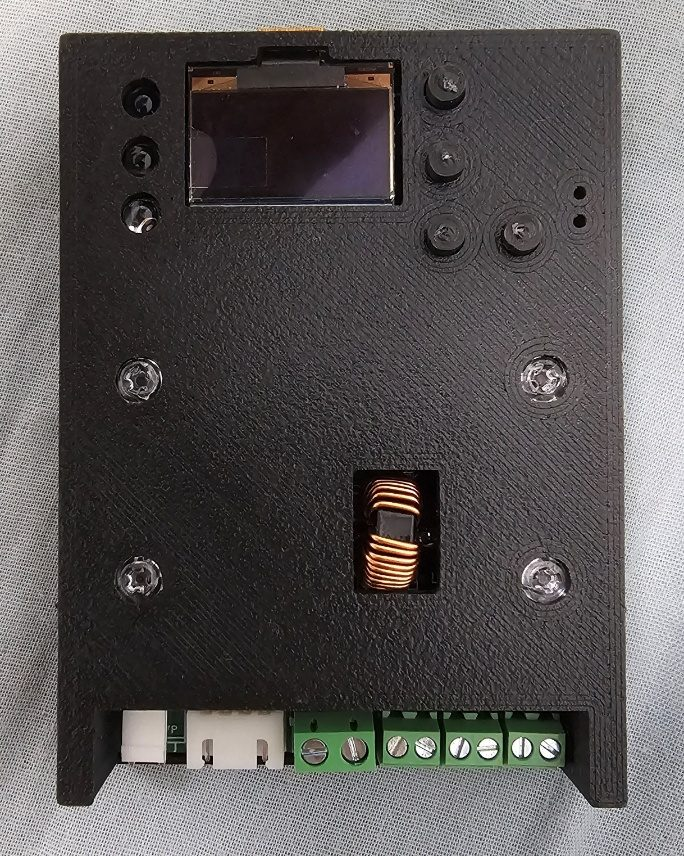

高階款控制盒（TES 快充控制板）
這塊控制板是整套充電設備的「大腦」：它實作了車輛原本就在用的 TES-0D-02-01 快充通訊協定，透過 CAN Bus 跟車輛的電池管理系統（BMS）做正規的充電交握，再去指揮整流模組輸出。

搭配整流模組及副廠充電槍，就能透過車上原本的 TES 快充接口充電——包括轉接使用汽車的 AC 慢充樁（J1772 / Type 2）。充電槍需要自行向中國的廠商訂做，這部分我不提供。
- 控制器設計上限：120 V / 100 A
- 手機開網頁就能看：即時電壓、電流、目前電量（SOC）、預估剩餘時間
- 可設定充到幾 % 就停、最大電壓電流、停止條件
- 排程充電（離峰電價適用）、開始／完成／異常推播到手機
- 最近 20 次充電紀錄：時長、充了幾度、電量從幾 % 充到幾 %、停止原因
- OTA 無線更新韌體；車輛本身完全不動
手機操作：Android 有 App，iPhone 用網頁——見App 與遠端監控。完整操作步驟見高階款說明書（也有 PDF）。
買之前要知道
- 配旋鈕（手動可調）電源時，電流和電壓要在控制盒設定和電源旋鈕兩邊都調：控制盒的設定是上限與保護，電源實際輸出多少由旋鈕決定。配可程式電源則由控制盒自動控制。
- 控制板只適合具備高壓直流經驗的人。整流模組的選配、充電槍的訂做、線材、保護與組裝都要自己負責。
- CAN Bus 接錯或短路，會造成車輛 BMS 永久性損壞。我在開發初期就燒過一台車的 CAN 埠，那是早期洞洞板時期外購 CAN 模組的瑕疵；現在的控制板已經是穩定的正式電路板，這條提醒是寫給要自己接線的人。
- 6 kW / 30 分鐘是我自己研究平台的實測結果，不是控制板的保證值。實際能做到多少，取決於整流模組、充電槍線徑和現場進線容量。
- 控制板未經 BSMI、UL 等安規認證；任何第三方補能設備都可能影響原廠保固，請自行評估。
沒有高壓直流經驗的話，請不要買控制板——選原廠充電器改裝。